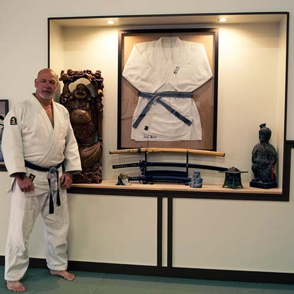

Over Sportcentrum Rust
Sportcentrum Rust is een plek waar acht sporten samenkomen: judo, A-judo, aikido, kickboksen & boksen, Brazilian jiu-jitsu, yoga & bodybalance, cross training, strength en total body circuit. Voor elke leeftijd en elk niveau is er een les die past, van de eerste stap op de mat tot het werken aan een hogere band.
De wortel: judo
Judo is meer dan een sport: het is een levensfilosofie en een opvoedkundig middel, internationaal erkend binnen de judowereld. Kinderen ontwikkelen zich in een veilige omgeving, zowel fysiek als mentaal. De sport is toegankelijk voor iedereen: kinderen met een beperking sporten naast valide sporters, en ook ouders kunnen meedoen aan de beschikbare programma's.

Jan Rust, eigenaar
Jan Rust is eigenaar van Sportcentrum Rust. Hij begon als judoleraar, en die achtergrond is nog steeds te herkennen in de manier waarop er bij Sportcentrum Rust wordt lesgegeven: met aandacht voor respect, discipline en een veilige omgeving om te groeien, voor elke sport die er inmiddels bij is gekomen.